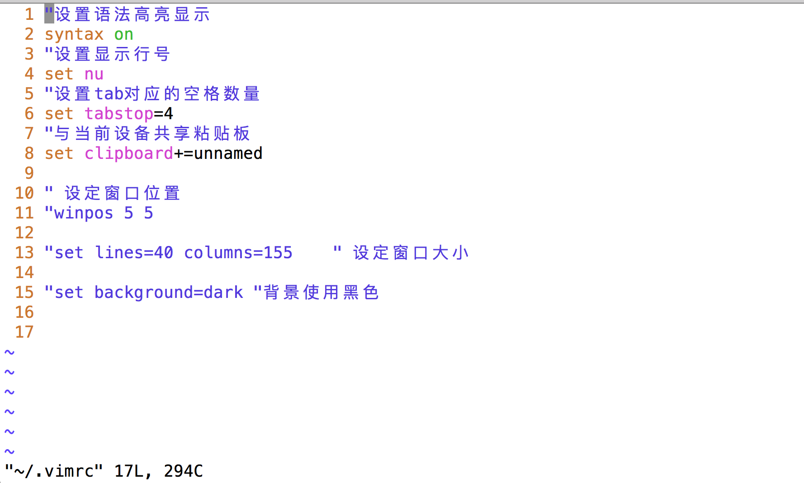

<!DOCTYPE html>
<html>
<head><meta name="generator" content="Hexo 3.8.0">
  <meta charset="utf-8">
  
  <title>hancc</title>

  <!-- keywords -->
  

  <meta name="viewport" content="width=device-width, initial-scale=1, maximum-scale=1">
  <meta property="og:type" content="website">
<meta property="og:title" content="hancc">
<meta property="og:url" content="http://img2.imgtn.bdimg.com/it/u=1332860980,2768867230&fm=26&gp=0.jpg/index.html">
<meta property="og:site_name" content="hancc">
<meta property="og:locale" content="default">
<meta name="twitter:card" content="summary">
<meta name="twitter:title" content="hancc">
  
    <link rel="alternative" href="/atom.xml" title="hancc" type="application/atom+xml">
  
  
    <link rel="icon" href="http://7xkj1z.com1.z0.glb.clouddn.com/head.jpg">
  
  <link rel="stylesheet" href="/css/style.css">
  
  

  <script src="//cdn.bootcss.com/require.js/2.3.2/require.min.js"></script>
  <script src="//cdn.bootcss.com/jquery/3.1.1/jquery.min.js"></script>

  
</head></html>
<body>
  <div id="container">
    <div id="particles-js"></div>
    <div class="left-col">
    <div class="overlay"></div>
<div class="intrude-less">
	<header id="header" class="inner">
		<a href="/" class="profilepic">
			
			
			
		</a>

		<hgroup>
		  <h1 class="header-author"><a href="/">憨猜猜博客</a></h1>
		</hgroup>

		

		
			<div class="switch-btn">
				<div class="icon">
					<div class="icon-ctn">
						<div class="icon-wrap icon-house" data-idx="0">
							<div class="birdhouse"></div>
							<div class="birdhouse_holes"></div>
						</div>
						<div class="icon-wrap icon-ribbon hide" data-idx="1">
							<div class="ribbon"></div>
						</div>
						
						<div class="icon-wrap icon-link hide" data-idx="2">
							<div class="loopback_l"></div>
							<div class="loopback_r"></div>
						</div>
						
						
					</div>
					
				</div>
				<div class="tips-box hide">
					<div class="tips-arrow"></div>
					<ul class="tips-inner">
						<li>菜单</li>
						<li>标签</li>
						
						<li>友情链接</li>
						
						
					</ul>
				</div>
			</div>
		

		<div class="switch-area">
			<div class="switch-wrap">
				<section class="switch-part switch-part1">
					<nav class="header-menu">
						<ul>
						
							<li><a href="/">主页</a></li>
				        
							<li><a href="/archives">所有文章</a></li>
				        
						</ul>
					</nav>
					<nav class="header-nav">
						<div class="social">
							
						</div>
					</nav>
				</section>
				
				
				<section class="switch-part switch-part2">
					<div class="widget tagcloud" id="js-tagcloud">
						
					</div>
				</section>
				
				
				
				<section class="switch-part switch-part3">
					<div id="js-friends">
					
			          <a target="_blank" class="main-nav-link switch-friends-link" href="https://www.jianshu.com/u/63c84996095f">smackdown</a>
			        
			        </div>
				</section>
				

				
			</div>
		</div>
	</header>				
</div>
    </div>
    <div class="mid-col">
      <nav id="mobile-nav">
  	<div class="overlay">
  		<div class="slider-trigger"></div>
  		<h1 class="header-author js-mobile-header hide">憨猜猜博客</h1>
  	</div>
	<div class="intrude-less">
		<header id="header" class="inner">
			<div class="profilepic">
				
			</div>
			<hgroup>
			  <h1 class="header-author">憨猜猜博客</h1>
			</hgroup>
			
			<nav class="header-menu">
				<ul>
				
					<li><a href="/">主页</a></li>
		        
					<li><a href="/archives">所有文章</a></li>
		        
		        <div class="clearfix"></div>
				</ul>
			</nav>
			<nav class="header-nav">
				<div class="social">
					
				</div>
			</nav>
		</header>				
	</div>
</nav>
      <div class="body-wrap">
  
    <article id="post-HTML" class="article article-type-post" itemscope="" itemprop="blogPost">
  
    <div class="article-meta">
      <a href="/2018/12/25/HTML/" class="article-date">
  	<time datetime="2018-12-25T12:43:19.623Z" itemprop="datePublished">2018-12-25</time>
</a>
    </div>
  
  <div class="article-inner">
    
      <input type="hidden" class="isFancy">
    
    
    <div class="article-entry" itemprop="articleBody">
      
        <hr>
<p>HTML</p>
<hr>
<h2 id="1-标题标签（h1-h6）"><a href="#1-标题标签（h1-h6）" class="headerlink" title="1.标题标签（h1~h6）"></a>1.标题标签（h1~h6）</h2><pre><code>双标签
网页中标题的部分使用标题标签
</code></pre><h2 id="2-段落标签（p）"><a href="#2-段落标签（p）" class="headerlink" title="2.段落标签（p）"></a>2.段落标签（p）</h2><pre><code>双标签
</code></pre><h2 id="3-文本符号和强制换行符号"><a href="#3-文本符号和强制换行符号" class="headerlink" title="3.文本符号和强制换行符号"></a>3.文本符号和强制换行符号</h2><figure class="highlight plain"><table><tr><td class="gutter"><pre><span class="line">1</span><br><span class="line">2</span><br></pre></td><td class="code"><pre><span class="line"></span><br><span class="line"></span><br></pre></td></tr></table></figure>
<p>  a.空格符号：<br>  &amp;nbsp； - 空一个像素<br>  &amp;emsp； - 一个空格</p>
<p>  b.换行标签（br)<br>  单标签</p>
<figure class="highlight plain"><table><tr><td class="gutter"><pre><span class="line">1</span><br><span class="line">2</span><br></pre></td><td class="code"><pre><span class="line"></span><br><span class="line"></span><br></pre></td></tr></table></figure>
<h2 id="4-文字效果标签"><a href="#4-文字效果标签" class="headerlink" title="4.文字效果标签"></a>4.文字效果标签</h2><p>  a.文字加粗<br>  b标签 - 单纯的对文字进行加粗<br>  strong标签 - 除了对文字进行加粗，还有强调的意思</p>
<p>  b.文字倾斜<br>  i标签 - 单纯的对文字进行倾斜<br>  em标签 - 除了对文字进行倾斜，还有强调的意思</p>
<p>  c.水平线（hr）<br>  单标签<br>  hr - hr所在的位置设置一个水平线</p>
<h2 id="5-文字标签（font）"><a href="#5-文字标签（font）" class="headerlink" title="5.文字标签（font）"></a>5.文字标签（font）</h2><p>  单纯的显示一段文字，多个font标签之间不会自动换行</p>
<p>列表标签</p>
<h3 id="1-无序列表（ul-li）"><a href="#1-无序列表（ul-li）" class="headerlink" title="1.无序列表（ul - li）"></a>1.无序列表（ul - li）</h3><pre><code>ul标签 - 代表整个列表
li - 表示列表中的元素
</code></pre><h3 id="2-有序列表（ol-li）"><a href="#2-有序列表（ol-li）" class="headerlink" title="2.有序列表（ol - li）"></a>2.有序列表（ol - li）</h3><pre><code>ol标签 - 代表整个列表
li - 表示列表中的元素
</code></pre><h3 id="3-自定义列表（dl-dt-dd）"><a href="#3-自定义列表（dl-dt-dd）" class="headerlink" title="3.自定义列表（dl - dt - dd）"></a>3.自定义列表（dl - dt - dd）</h3><pre><code>dl - 代表整个列表
dt - 列表中的分组
dd - 每个分组下面的元素
</code></pre><p>图片标签<br>   图片标签（img） - 单标签<br>   网页上几乎所有的图片都是使用img标签直接或者间接的显示的</p>
<h2 id="1-src属性-设置图片地址"><a href="#1-src属性-设置图片地址" class="headerlink" title="1.src属性 - 设置图片地址"></a>1.src属性 - 设置图片地址</h2><p>   a.本地图片 - 值为本地图片的路径（可以是相对路径，也可以是绝对路径；一般使用相对路径）<br>   b.网络图片 - 值为网络图片的url</p>
<h2 id="2-title属性-设置图片标题"><a href="#2-title属性-设置图片标题" class="headerlink" title="2.title属性 - 设置图片标题"></a>2.title属性 - 设置图片标题</h2><p>   当鼠标停留在图片上才会显示出来</p>
<p>   ##3.alt属性 - 设置图片加载失败的提示信息<br>   只有在图片加载失败的时候才会显示</p>
<h2 id="超链接"><a href="#超链接" class="headerlink" title="超链接"></a>超链接</h2><p>   超链接标签（a）<br>   点击可以跳转到其他页面的内容就是超链接</p>
<h2 id="1-内容"><a href="#1-内容" class="headerlink" title="1.内容"></a>1.内容</h2><p>   超链接在网页中可见并且可点击的部分；可以是文字，也可以是图片</p>
<p>   ##2.href属性 - 超链接点击后跳转的目标地址<br>   a.设置另外一个网页的地址 - 跳转到指定网页<br>   b.设置成另外一个本地HTML文件路径 - 跳转到本地网页中<br>   c.设置成当前页面的标签对应的选择器 - 让当前网页滚动到指定的位置<br>   d.设置为空 - 刷新网页（会重新请求数据）</p>
<h2 id="3-target属性"><a href="#3-target属性" class="headerlink" title="3.target属性"></a>3.target属性</h2><p>   _self（默认值） - 在当前页面中显示新的网页<br>   _blank - 在新的页面中显示新的网页</p>
<p>表格标签<br>   表格标签（table-tr-td）<br>   table标签 - 代表整个表格<br>   tr标签 - 代表表格学号的每一行<br>   td - 代表表格中的每一个单元格</p>
<h2 id="1-border-设置边框宽度（单位是像素）"><a href="#1-border-设置边框宽度（单位是像素）" class="headerlink" title="1.border - 设置边框宽度（单位是像素）"></a>1.border - 设置边框宽度（单位是像素）</h2><p>   设置整个表格的边框为border，同时设置每个单元格的边框宽度为1</p>
<p>   ##2.bordercolor - 设置边框颜色<br>   html中的颜色值：a.颜色的英语单词，red ，yellow，green，pink<br>                  b.rgb对应的16进制值，前加#</p>
<p>   ##3.cellspacing–设置表格中单元格和单元格之间，以及单元格和边框之间的间距</p>
<p>   ##4.cllpadding - 设置表格中的内容到单元格边框之间的间距<br>   默认情况下，单元格的大小跟内容的大小有关</p>
<p>   ##5.bgcolor - 设置背景颜色<br>   作为table属性 - 设置整个列表的背景颜色<br>   作为tr属性 - 设置一行的背景颜色<br>   作为td属性 - 设置一个单元格的背景颜色</p>
<p>   ##6.width - 设置宽度<br>   作为table属性 - 设置整个列表的宽度<br>   作为td属性 - 设置当前td所在的列的宽度</p>
<h2 id="7-height-设置高度"><a href="#7-height-设置高度" class="headerlink" title="7.height - 设置高度"></a>7.height - 设置高度</h2><p>   作为table属性 - 设置整个列表的高度<br>   作为tr属性 - 设置一行的高度</p>
<h2 id="8-align-设置水平对齐方式"><a href="#8-align-设置水平对齐方式" class="headerlink" title="8.align - 设置水平对齐方式"></a>8.align - 设置水平对齐方式</h2><p>   letf（默认） - 左对齐<br>   right  - 右对齐<br>   center - 居中<br>   作为table属性 - 让整个表格在网页中左对齐、右对齐、居中<br>   作为tr属性-让一行中所有的单元格中的内容，在单元格中左对齐，右对齐、居中<br>   作为td属性 - 让一个单元格中的内容，在单元格中左对齐、右对齐、居中</p>
<p>   注意：html中所有的属性值都是写在双引号里面</p>
<hr>

      
    </div>
    
    <div class="article-info article-info-index">
      
      
      

      
      <div class="clearfix"></div>
    </div>
      
    
  </div>
  
</article>


  
    <article id="post-初学数据库" class="article article-type-post" itemscope="" itemprop="blogPost">
  
    <div class="article-meta">
      <a href="/2018/12/24/初学数据库/" class="article-date">
  	<time datetime="2018-12-24T09:19:18.452Z" itemprop="datePublished">2018-12-24</time>
</a>
    </div>
  
  <div class="article-inner">
    
      <input type="hidden" class="isFancy">
    
    
    <div class="article-entry" itemprop="articleBody">
      
        <h1 id="初学数据库"><a href="#初学数据库" class="headerlink" title="初学数据库"></a>初学数据库</h1><p>数据库 - 实现项目中的数据持久化</p>
<p>数据库的类别：</p>
<ul>
<li>关系型数据库 - MySQL<br>特点：<br>1.理论基础：集合论和关系代数<br>2.用二维表来组织数据（行（记录）和列 （字段））<br>3.SQL - 结构化查询语言</li>
</ul>
<p>关系型数据库产品：</p>
<ol>
<li>Oracle - 甲骨文</li>
<li>MySQL - 甲骨文 - MariaDB<br>3.DB2、SqlServer、postgresql、SQLite</li>
</ol>
<p>-NoSQL数据库 - Redis</p>
<ol>
<li>MongoDB -文档数据库 -适合量大但是价值低的数据<br>2.Redis  - KV数据库 -性能好适合做高速缓存服务<br>3.ElasticSearch - 搜索引擎</li>
</ol>
<ul>
<li>Linux安装软件</li>
</ul>
<ol>
<li>包管理工具 - yum / rpm</li>
</ol>
<p>Docker - 提供虚拟机服务，创建虚拟化容器并安装软件<br>yum -y install docker-io   安装<br>yum -y remove docker-io  - 删除<br>yum info - 查看信息<br>yum search - 搜索<br>yum list installed |grep docker -  </p>
<p>启动Docker服务<br>systemctl start  docker  - 启动服务器<br>systemctl stop  docker - 停止虚拟服务<br>systemctl restart  docker - 重启<br>systemctl status  docker - 查看状态<br>systemctl enable  docker  - 开机自启<br>systemctl disable  docker  -  禁止服务器自启</p>
<p>使用docker的命令<br>查看已经下载的镜像文件（安装包）：<br>docker images</p>
<p>2.下载MySQL的镜像文件：<br>docker pull MySQL：5.7</p>
<p>MySQL数据库超级管理员账号 - root<br>Oracle数据库超级管理员账号 - sys</p>
<p>3.创建并运行容器<br>docker run -d -p  3306:3306 –name mysql57 -e<br>MYSQL_ROOT_PASSWORD=123456 mysql:5.7</p>
<p>4.查看运行中的容器<br>docker ps<br>5.查看全部容器<br>docker container ls -a<br>6.停止所有的容器<br>docker stop MySQL57</p>
<p>7.启动容器</p>
<p>8.</p>
<p>安装MySQL客户端工具：<br>Navicat forMySQL - 猫<br>sqlyog  - 海豚<br>toad for MySQL - 蛤蟆</p>
<p>替代方案<br>yum -y install mariadb mariadb-server</p>
<p>启动服务器<br>systemctl  start mariadb</p>
<p>检查端口<br>netstat -nap | grep 3306</p>
<p>rm -f ./*  删除该路径上的全部文件</p>
<p>MySQL<br>退出 - ：q<br>保存退出 - ：zz<br>序列 ：set ： cu</p>
<p>！ifconfig eth0  - 私有网址<br>w 查看有多少台连接系统</p>
<p>exit 退出</p>
<p>– SQL (结构化查询语言)分为三组:<br>– 1.DDL (数据定义语言): creat / drop(删除) / alter（修改）<br>– 2.DML (数据操作语言): insert / delete / update / select(重点)<br>– 3.dCL (数据控制语言): grant / revoke /commit / rollback</p>
<p>– 创建数据库srs</p>
<p>drop database 手别养</p>

      
    </div>
    
    <div class="article-info article-info-index">
      
      
      

      
      <div class="clearfix"></div>
    </div>
      
    
  </div>
  
</article>


  
    <article id="post-#数据库" class="article article-type-post" itemscope="" itemprop="blogPost">
  
    <div class="article-meta">
      <a href="/2018/12/24/#数据库/" class="article-date">
  	<time datetime="2018-12-24T09:17:33.822Z" itemprop="datePublished">2018-12-24</time>
</a>
    </div>
  
  <div class="article-inner">
    
      <input type="hidden" class="isFancy">
    
    
    <div class="article-entry" itemprop="articleBody">
      
        <p>#数据库</p>
<p>– SQL (结构化查询语言)分为三组:<br>– 1.DDL (数据定义语言): creat / drop(删除) / alter（修改）<br>– 2.DML (数据操作语言): insert / delete / update / select(重点)<br>– 3.dCL (数据控制语言): grant / revoke /commit / rollback</p>
<p>– 如果存在名为srs的数据库就删除它（慎重）<br>drop database if exists srs;<br>– 创建数据库srs的数据库并设置默认字符集为utf-8<br>create database srs default charset utf8;<br>– 切换到srs数据库<br>use srs;</p>
<p>– 如果存在名为tb_student就删除<br>drop table if exists tb_student;</p>
<p>– 创建二维表来收集数据<br>– 创建学生表 tb_student<br>– 在学生表中学号可以唯一的标记一条学生记录<br>– 我们通常称这样的列为主键列<br>create table tb_student<br>(<br>stuid int not null comment ‘学号’ , – 非空约束<br>stuname varchar(10) not null comment ‘姓名’, – 判断最大长度<br>stusex bit default 1 comment ‘性别’,–  性别默认<br>stubirth date comment ‘出生日期’ ,– timestamp时间戳<br>stuaddr varchar(255) comment ‘家庭地址’, – 身份证的最大长度<br>primary key (stuid)<br>);</p>
<p>– 修改学生表添加联系方式列<br>alter table tb_student add column stutel  char(11); – char(11)定常字符串</p>
<p>– 修改表删除联系方式列<br>alter table tb_student drop column stutel; – 删除学生</p>
<p>– 向学生表插入数据<br>insert into tb_student values (1001,’何志成’,1,’1998-07-13’,’四川成都’);<br>insert into tb_student values (1002,’剩菜’,0,’1998-07-11’,’云南昆明’);<br>insert into tb_student values (1003,’姚明’,1,’1976-04-03’,null),<br>(1004,’何联聪’,0,null,null),(1005,’大壮’,1,’1999-05-22’,null);</p>

      
    </div>
    
    <div class="article-info article-info-index">
      
      
      

      
      <div class="clearfix"></div>
    </div>
      
    
  </div>
  
</article>


  
    <article id="post-Nginx服务器安装" class="article article-type-post" itemscope="" itemprop="blogPost">
  
    <div class="article-meta">
      <a href="/2018/12/22/Nginx服务器安装/" class="article-date">
  	<time datetime="2018-12-22T08:09:37.719Z" itemprop="datePublished">2018-12-22</time>
</a>
    </div>
  
  <div class="article-inner">
    
      <input type="hidden" class="isFancy">
    
    
    <div class="article-entry" itemprop="articleBody">
      
        <hr>
<p>title： Nginx服务器</p>
<hr>
<h1 id="Nginx服务器"><a href="#Nginx服务器" class="headerlink" title="Nginx服务器"></a>Nginx服务器</h1><h3 id="1-阿里云添加80端口"><a href="#1-阿里云添加80端口" class="headerlink" title="1.阿里云添加80端口"></a>1.阿里云添加80端口</h3><p>阿里云上默认只有一个22端口用来做远程登录，如果希望在阿里云上安装支持http请求的nginx服务器，需要给阿里云添加80端口</p>
<p><br><br><br></p>
<h3 id="2-安装nginx"><a href="#2-安装nginx" class="headerlink" title="2. 安装nginx"></a>2. 安装nginx</h3><p>a) 添加nginx存储库  </p>
<figure class="highlight python"><table><tr><td class="gutter"><pre><span class="line">1</span><br></pre></td><td class="code"><pre><span class="line">yum install epel-release</span><br></pre></td></tr></table></figure>
<p>b) 安装nginx</p>
<figure class="highlight python"><table><tr><td class="gutter"><pre><span class="line">1</span><br></pre></td><td class="code"><pre><span class="line">yum install nginx</span><br></pre></td></tr></table></figure>
<p>c) 运行nginx<br>Nginx不会自行启动。要运行Nginx  </p>
<figure class="highlight plain"><table><tr><td class="gutter"><pre><span class="line">1</span><br></pre></td><td class="code"><pre><span class="line">systemctl start nginx</span><br></pre></td></tr></table></figure>
<p>nginx的运行命令:  </p>
<figure class="highlight plain"><table><tr><td class="gutter"><pre><span class="line">1</span><br><span class="line">2</span><br></pre></td><td class="code"><pre><span class="line">systemctl status nginx 查看nginx的状态  </span><br><span class="line">systemctl start/stop/enable/disable nginx 启动/关闭/设置开机启动/禁止开机启动</span><br></pre></td></tr></table></figure>
<p>d) 系统启动时启动Nginx  </p>
<figure class="highlight plain"><table><tr><td class="gutter"><pre><span class="line">1</span><br></pre></td><td class="code"><pre><span class="line">systemctl enable nginx</span><br></pre></td></tr></table></figure>
<p>e）如果您正在运行防火墙，请运行以下命令以允许HTTP和HTTPS通信：   </p>
<figure class="highlight plain"><table><tr><td class="gutter"><pre><span class="line">1</span><br><span class="line">2</span><br><span class="line">3</span><br><span class="line">4</span><br><span class="line">5</span><br></pre></td><td class="code"><pre><span class="line">sudo firewall-cmd --permanent --zone=public --add-service=http </span><br><span class="line"></span><br><span class="line">sudo firewall-cmd --permanent --zone=public --add-service=https</span><br><span class="line"></span><br><span class="line">sudo firewall-cmd --reload</span><br></pre></td></tr></table></figure>
<h3 id="3-nginx目录共享配置"><a href="#3-nginx目录共享配置" class="headerlink" title="3.nginx目录共享配置"></a>3.nginx目录共享配置</h3><p>a) 在contOS目录中确定一个需要共享的文件夹，例如： /home/yuting<br>b) 打开 etc/nginx/nginx.conf 文件，设置server</p>
<figure class="highlight plain"><table><tr><td class="gutter"><pre><span class="line">1</span><br><span class="line">2</span><br><span class="line">3</span><br><span class="line">4</span><br><span class="line">5</span><br><span class="line">6</span><br><span class="line">7</span><br></pre></td><td class="code"><pre><span class="line">#共享设置 - 在浏览器中输入服务器ip地址，会展示共享目录的文件列表</span><br><span class="line">root /home/yuting;</span><br><span class="line">location / &#123;</span><br><span class="line">       autoindex on;</span><br><span class="line">       autoindex_exact_size on;</span><br><span class="line">       autoindex_localtime on;</span><br><span class="line">&#125;</span><br></pre></td></tr></table></figure>
<p>除了可以共享文件，还可以自定义页面</p>
<figure class="highlight plain"><table><tr><td class="gutter"><pre><span class="line">1</span><br><span class="line">2</span><br><span class="line">3</span><br><span class="line">4</span><br><span class="line">5</span><br></pre></td><td class="code"><pre><span class="line">#自定义服务器页面</span><br><span class="line">location / &#123;</span><br><span class="line">		root /home/yuting;</span><br><span class="line">		index index.html index.htm;</span><br><span class="line">&#125;</span><br></pre></td></tr></table></figure>
<p>注意： 如果出现权限问题，可以修改目录的权限  </p>
<h1 id="ssh密钥认证"><a href="#ssh密钥认证" class="headerlink" title="ssh密钥认证"></a>ssh密钥认证</h1><p>1.在主机和从机上执行：<code>ssh-keygen</code></p>
<p>2.在从机上执行:  <code>scp  id_rsa.pub  root@主机地址:~/.ssh/master.pub</code><br>(上面这条指令是将从机上的 id_rsa.pub文件拷贝传递给到主机的.ssh文件夹下，并且命名为’master.pub’)</p>
<p>3.在主机中的.ssh文件夹中创建authorized_keys文件： <code>touch authorized_keys</code> </p>
<p>4.修改文件authorized_keys的权限: <code>chmod 600  authorized_keys</code>  </p>
<p>5.将master.pub放进authorized_keys文件中:  <code>cat master.pub &gt;&gt;  authorized_keys</code></p>
<p>6.在操作主机的时候，需要主机能够自己免密访问自己就将自己的公钥放在自己的authorized_keys文件中</p>

      
    </div>
    
    <div class="article-info article-info-index">
      
      
      

      
      <div class="clearfix"></div>
    </div>
      
    
  </div>
  
</article>


  
    <article id="post-vim编辑器之神" class="article article-type-post" itemscope="" itemprop="blogPost">
  
    <div class="article-meta">
      <a href="/2018/12/22/vim编辑器之神/" class="article-date">
  	<time datetime="2018-12-22T08:09:27.770Z" itemprop="datePublished">2018-12-22</time>
</a>
    </div>
  
  <div class="article-inner">
    
      <input type="hidden" class="isFancy">
    
    
    <div class="article-entry" itemprop="articleBody">
      
        <hr>
<h2 id="title：-vim编辑器之神"><a href="#title：-vim编辑器之神" class="headerlink" title="title： vim编辑器之神"></a>title： vim编辑器之神</h2><h1 id="vim编辑器之神"><a href="#vim编辑器之神" class="headerlink" title="vim编辑器之神"></a>vim编辑器之神</h1><h3 id="配置vimrc配置"><a href="#配置vimrc配置" class="headerlink" title="配置vimrc配置"></a>配置vimrc配置</h3><p>在shell中可以通过 <code>vim ~/.vimrc</code> 或者 <code>vim /etc/vimrc</code> 打开vimrc文件对vim进行配置。在这个文件中可以进行很多和vim相关的配置，常用的如下（如果对其他配置感兴趣的可以自己百度）：</p>
<p> </p>
<h3 id="常用操"><a href="#常用操" class="headerlink" title="常用操"></a>常用操</h3><h4 id="1-模式切换"><a href="#1-模式切换" class="headerlink" title="1.模式切换"></a>1.模式切换</h4><p>我们可以将vim分为命令模式、编辑模式和末行模式三种<br><strong>命令模式：</strong>进入vim的时候vim是处于命令模式状态下的，这个时候输入内容不会出现在编辑区  (最末什么都没有)</p>
<p><strong>末行模式：</strong>在命令模式下输入冒号，让vim进入末行模式。在末行模式的冒号后面可以输入相关的一些指令进行相关操作  (最后有一个冒号)</p>
<p><strong>编辑模式：</strong>在命令模式下按’i’进入编辑模式。在编辑模式下可以对文件内容进行编辑 (最后 –INSERT– 或者 –插入–)  </p>
<p>####2.保存和退出<br>在末行模式下输入相应的指令可以对编辑区的内容进行保存和退出vim界面<br><strong>w</strong> – 只保存(类似快捷键ctr+s)<br><strong>q</strong> – 退出（在编辑区的内容全部都保存的情况下才有效）<br><strong>wq</strong> – 保存并退出<br><strong>q!</strong>  – 强制退出（不保存修改信息）    </p>
<p>####3.光标操作<br>以下光标操作都是在命令模式下输入的<br><strong>^(shift+6)</strong>  – 移动到行首<br><strong>$(shift+4)</strong>  – 移动到行尾<br><strong>G(shift+g)</strong>    – 移动到文件末尾<br><strong>行号G</strong>            – 移动到指定行,例如:30G, 让光标直接跳转到行号是30的那一行<br><strong>gg</strong>                – 移动到文件开头  </p>
<p>####4.文本操作<br>以下操作不带冒号的是在命令模式下输入，前面有冒号代码后面的内容是在末行模式下输入<br><strong>dd</strong>            – 删除光标所在的行<br><strong>数字dd</strong>        – 从光标所在行开始往后面开始删，删除指定数量行内容<br><strong>:%d</strong>        – 删除所有     </p>
<p><strong>yy</strong>         – 复制光标所在的行<br><strong>数字yy</strong>        – 从光标所在行开始复制指定行数的内容<br><strong>p</strong>            – 将复制的内容粘贴到光标所在的位置<br><strong>u</strong>            – 撤销<br><strong>ctr+r</strong>    – 反撤销    </p>
<p><strong>:%!sort</strong>  – 对内容排序  </p>
<p><strong>:/查找对象[/gice]</strong>    – 搜索匹配正则表达式的内容，按回车回到命令模式后按n往前查找，按N往后查找  </p>
<p>*<em>:1,$s/被替换对象/替换内容[/gice</em>]*    – 将正则表达式匹配到的内容替换成指定内容   </p>
<pre><code>-    g: 全局匹配  
-     i: 忽略大小写 
-   c: 替换时需要提示  
-   e: 忽略错误  
</code></pre>
      
    </div>
    
    <div class="article-info article-info-index">
      
      
      

      
      <div class="clearfix"></div>
    </div>
      
    
  </div>
  
</article>


  
    <article id="post-git常用指令" class="article article-type-post" itemscope="" itemprop="blogPost">
  
    <div class="article-meta">
      <a href="/2018/12/22/git常用指令/" class="article-date">
  	<time datetime="2018-12-22T08:00:24.540Z" itemprop="datePublished">2018-12-22</time>
</a>
    </div>
  
  <div class="article-inner">
    
      <input type="hidden" class="isFancy">
    
    
    <div class="article-entry" itemprop="articleBody">
      
        <h1 id="git常用指令"><a href="#git常用指令" class="headerlink" title="git常用指令"></a>git常用指令</h1><h2 id="1-基本指令"><a href="#1-基本指令" class="headerlink" title="1.基本指令"></a>1.基本指令</h2><p><code>git init</code> &nbsp;&nbsp;&nbsp;&nbsp;&nbsp; ——  新建git仓库<br><code>git add 文件/文件夹</code> &nbsp;&nbsp;&nbsp;&nbsp;&nbsp; ——  将文件添加到缓存区中<br><code>git add -A</code> &nbsp;&nbsp;&nbsp;&nbsp;&nbsp; — 添加所有内容到缓存区中<br><code>git stutas</code> &nbsp;&nbsp;&nbsp;&nbsp;&nbsp;———    查看git状态<br><code>git commit -m  ‘提交信息’</code>  &nbsp;&nbsp;&nbsp;&nbsp;&nbsp;——  将缓存区中的内容全部提交到git本地仓库中  </p>
<p><code>git log</code>   &nbsp;&nbsp;&nbsp;&nbsp;&nbsp;——-    查看提交日志  </p>
<p><code>git reset  - - hard   HEAD</code>  &nbsp;&nbsp;&nbsp;&nbsp;&nbsp;——   让工作目录中的内容和仓库中的内容保持一致<br><code>git reset  --hard HEAD^</code>   &nbsp;&nbsp;&nbsp;&nbsp;&nbsp;——  回到上一个版本<br><code>git  reset  - - hard 版本号</code>  &nbsp;&nbsp;&nbsp;&nbsp;&nbsp;——  回到指定的版本<br><code>git checkout  - -  文件名</code>  &nbsp;&nbsp;&nbsp;&nbsp;&nbsp; ——  从暂存区中恢复工作目录中的内容(让工作区中的指定文件，回到上次提交的时候的状态)  </p>
<p><code>git clone &lt;url&gt;</code> - 将服务器上的项目(仓库)克隆 (使用https地址需要输入密码，使用ssh地址需要添加公钥)  </p>
<p><code>git remote add origin 地址</code>      &nbsp;&nbsp;&nbsp;&nbsp;&nbsp;—– 关联远程仓库(只需要关联一次)</p>
<p><code>git push [-u] origin master</code>  &nbsp;&nbsp;&nbsp;&nbsp;&nbsp;—– 提交(-u在第一次提交分之的时候才用)  </p>
<h2 id="2-分之管理"><a href="#2-分之管理" class="headerlink" title="2.分之管理"></a>2.分之管理</h2><p>创建仓库会默认给我们创建一个master分之,这个分之一般作为提交和发布分之;开发一般会自己创建一个develop分之，用来开发和测试;多人协作的时候还可能根据不同的人或者(不同的功能)创建不同的分之，用来独立开发  </p>
<p>常见分之： master(主要是合并develop), develop(主要合并下面的其他分支), 功能/人员分之(开发)  </p>
<p><code>git branch [-a]</code>   &nbsp;&nbsp;&nbsp;&nbsp;&nbsp;        - 查看分之<br><code>git branch 分之名</code>        &nbsp;&nbsp;&nbsp;&nbsp;&nbsp;- 创建分之<br><code>git checkout   分支名</code>        &nbsp;&nbsp;&nbsp;&nbsp;&nbsp;-   切换分之<br><code>git checkout -b 分之名</code>        &nbsp;&nbsp;&nbsp;&nbsp;&nbsp;    - 切换并创建新的分之<br><code>git diff    分之1  分之2</code>        &nbsp;&nbsp;&nbsp;&nbsp;&nbsp;- 查看两个分之之间的差异<br><code>git merge 分之名</code>            &nbsp;&nbsp;&nbsp;&nbsp;&nbsp;- 让当前分之和指定分之进行合并     </p>
<p>注意: 切换分之、push、pull，这些操作前要保证工作区是clean  </p>
<p>怎么避免冲突：  不要发生多个分之对同一个文件在同一个版本下进行修改(和同伴确认和商量)</p>

      
    </div>
    
    <div class="article-info article-info-index">
      
      
      

      
      <div class="clearfix"></div>
    </div>
      
    
  </div>
  
</article>


  
  
</div>
      <footer id="footer">
  <div class="outer">
    <div id="footer-info">
      <div class="footer-left">
        &copy; 2019 憨猜猜博客
      </div>
        <div class="footer-right">
          <a href="http://hexo.io/" target="_blank">Hexo</a>  Theme <a href="https://github.com/smackgg/hexo-theme-smackdown" target="_blank">Smackdown</a>
        </div>
    </div>
  </div>
</footer>
    </div>
    
  <link rel="stylesheet" href="/fancybox/jquery.fancybox.css">


<script>
	var yiliaConfig = {
		fancybox: true,
		mathjax: true,
		animate: true,
		isHome: true,
		isPost: false,
		isArchive: false,
		isTag: false,
		isCategory: false,
		open_in_new: false
	}
</script>
<script src="/js/main.js"></script>


<script type="text/x-mathjax-config">
MathJax.Hub.Config({
    tex2jax: {
        inlineMath: [ ['$','$'], ["\\(","\\)"]  ],
        processEscapes: true,
        skipTags: ['script', 'noscript', 'style', 'textarea', 'pre', 'code']
    }
});

MathJax.Hub.Queue(function() {
    var all = MathJax.Hub.getAllJax(), i;
    for(i=0; i < all.length; i += 1) {
        all[i].SourceElement().parentNode.className += ' has-jax';                 
    }       
});
</script>

<script src="//cdn.bootcss.com/mathjax/2.7.0/MathJax.js"></script>


  </div>
</body>
</html>